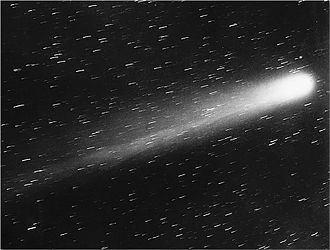
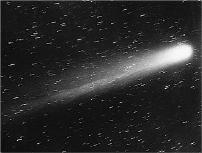

HALEYS
Period: 74 years
Luminosity: 5.5
 

Halley's Comet or Comet Halley, officially designated 1P/Halley is a short-period comet visible from Earth every 75–76 years. Halley is the only known short-period comet that is regularly visible to the naked eye from Earth, and the only naked-eye comet that might appear twice in a human lifetime. Halley last appeared in the inner parts of the Solar System in 1986 and will next appear in mid-2061 to 2062.
Halley's returns to the inner Solar System have been observed and recorded by astronomers since at least 240 BC. Clear records of the comet's appearances were made by Chinese, Babylonian, and medieval European chroniclers, but, at those times, were not recognized as reappearances of the same object. The comet's periodicity was first determined in 1705 by English astronomer Edmond Halley, after whom it is now named.
During its 1986 apparition, Halley's Comet became the first comet to be observed in detail by spacecraft, providing the first observational data on the structure of a comet nucleus and the mechanism of coma and tail formation. These observations supported a number of longstanding hypotheses about comet construction, particularly Fred Whipple's "dirty snowball" model, which correctly predicted that Halley would be composed of a mixture of volatile ices—such as water, carbon dioxide, and ammonia—and dust. The missions also provided data that substantially reformed and reconfigured these ideas; for instance, it is now understood that the surface of Halley is largely composed of dusty, non-volatile materials, and that only a small portion of it is icy.